Self-registering officers with manual moderation
- 1. General overview
- 2. Prerequisites
- 3. Reference process example
- 3.1. Creating pools for process participants
- 3.2. Starting the process
- 3.3. Sending token data for registration confirmation
- 3.4. Moderator receiving token data for registration confirmation
- 3.5. Script for data preparation for display on the UI form
- 3.6. Determining the business key of the process
- 3.7. Reviewing data for moderator registration on the UI form
- 3.8. Timer for the moderator’s decision regarding registration
- 3.9. Sending a message that the self-registration decision was not accepted (alternative flow)
- 3.10. Receiving a message that the self-registration decision was not accepted (alternative flow)
- 3.11. Displaying information about process completion on a form (alternative flow)
- 3.12. Signing data with a Qualified Electronic Signature (QES)
- 3.13. Signing data with a system key
- 3.14. Creating a record in the registry database
- 3.15. Determining the execution status of the process
- 3.16. Sending the decision back to the applicant registration process
- 3.17. Receiving a message confirming self-registration decision and recording it in the Data Factory
- 3.18. Modeling a XOR gateway and adding logic through condition expressions
- 4. Displaying information on the lack of registration permission (alternative flow)
| 🌐 This document is available in both English and Ukrainian. Use the language toggle in the top right corner to switch between versions. |
1. General overview
Let us take a look at the business process of automatic registration of Officers (service providers) with manual data verification by a moderator.
The business process consists of two pools representing two participants: the Officer applicant who self-registers and the moderator who verifies the data. Information exchange between participants is carried out through message events.
The applicant enters personal data on a form, which is sent to the moderator for verification. The moderator has a specific time frame (here — 2 minutes) to make a decision, controlled by a timer boundary event. If a decision is not made in time, the process follows an alternative path and terminates, and the user is not registered.
In case of a positive decision, the data is signed with a qualified electronic signature (QES) and a system key, then stored in the system’s database table (here - officer) according to the previously created data model. Information about the decision is sent to the applicant through a notification event. If the decision is negative, the process follows an alternative path, and the user is not registered.
Upon a positive decision, the information is passed to a service task with the delegate Save user roles, which changes the user’s role from unregistered-officer to officer. Thus, the user is registered in the system.
The applicant is redirected to a page confirming successful self-registration with the status Registration complete. Afterward, the applicant is redirected to a login page.
After re-authentication with the role officer, the Officer gains access to all services available in the registry. A registered user with the role officer can initiate, view, edit, and provide services, according to their permissions and duties in the system.
In this way, the business process of automatic registration of Officers (service providers) with manual data verification by a moderator streamlines the registration process, ensuring effective control by the moderator and reducing the time required for user registration.
2. Prerequisites
To enable the self-registration business process, the following prerequisites must be met:
2.1. Enabling the Officer self-registration option
Enable the option for Officer self-registration in the Control Plane administrative panel.
| For more details, see Configuring self-registration for officers. |
2.2. Data structure modeling
Create a data model for the registry following the example below.
|
You can find an example .xml schema in the demo registry regulations. The schema will be available under the name tablesOfficers.xml. |
Reference data model example. Tables for storing self-registered users
<changeSet author="registry owner" id="table officers">
<createTable tableName="officers" ext:historyFlag="true" remarks="Officer's list">
<column name="officers_id" type="UUID" defaultValueComputed="uuid_generate_v4()">
<constraints nullable="false" primaryKey="true" primaryKeyName="pk_officers_id"/>
</column>
<column name="user_name" type="TEXT" remarks="User's username in Keycloa">
<constraints nullable="false"/>
</column>
<column name="full_name" type="TEXT" remarks="User's full name">
<constraints nullable="false"/>
</column>
<column name="drfo" type="TEXT" remarks="Registration number of the taxpayer's account card">
<constraints nullable="false"/>
</column>
<column name="edrpou" type="TEXT" remarks="User's number at the Unified state register of enterprises and organizations of Ukraine">
<constraints nullable="false"/>
</column>
<column name="realm_roles" type="TEXT" remarks="List of user's roles in the regulations"/>
<column name="work_start_date" type="DATE" remarks="Date of employment"/>
<column name="unit_name" type="TEXT" remarks="Name of the unit according to the hierarchy"/>
<column name="hierarchy_code" type="TEXT" remarks="Surrogate key derived from structure_code"/>
<column name="structure_code" type="TEXT" remarks="Unique hierarchy code for the corresponding unit"/>
<column name="selfregistration_decision" type="BOOLEAN" remarks="Moderator's decision regarding self-registration"/>
</createTable>
</changeSet>This data model creates a table named officers in the database, which stores information about registered users (Officers) who have self-registered in the system.
Description of the table columns
-
officers_id: This is the primary key of the table with a unique identifier for each Officer, using the UUID data type, which is automatically generated using theuuid_generate_v4()function. -
user_name: Usernames from the Keycloak system (an identity and user access management system). -
full_name: Full name of the user.
-
drfo: Registration number of the taxpayer’s account card of the user.
-
edrpou: User’s number at the Unified state register of enterprises and organizations of Ukraine.The drfo and edrpou are attributes specific to the Ukrainian implementation and may not apply or function as described in other contexts or regions. Please consult the local guidelines or documentation if you are implementing this outside of Ukraine. -
realm_roles: List of user roles in the regulations.
-
work_start_date: Date of employment.
-
unit_name: Name of the unit according to the organization’s hierarchy. -
hierarchy_code: Surrogate key generated based on the
structure_code. -
structure_code: Unique hierarchy code for the corresponding unit. -
selfregistration_decision: Boolean value reflecting the moderator’s decision regarding user self-registration.
3. Reference process example
|
You can find an example BPMN model of the process as well as custom JSON forms for it in the demo registry regulations. The process will be available under the name officer-selfregistration-handmoderation.bpmn. You can find the form names within the respective business process tasks in the |
3.1. Creating pools for process participants
Create two pools (Participants) for process participants — the Officer-applicant who self-registers and the moderator who verifies the data.
Specify the following for each of the pools:
-
Participant Name: process pool name -
Process ID: Process identifier in the registry regulations. -
Process name: Business name of the process. -
Activate the
Executablecheckbox.
3.2. Starting the process
Model the starting event. This event initiates the automatic start of the process after authentication with the unregistered-officer role.
-
Specify the task name.
-
Set the process initiator as
initiator.What is initiator?
-
"
Start initiator = initiator" indicates that the initiator’s value (i.e., the person or system that initiated the process) will be set as theinitiator.
In the context of business processes, the initiator is the one who initiates the process or is responsible for its start. Typically, the initiator is a user who triggers an action, or it can be a system that automatically initiates the process.
In this case, the
initiatorcan be used to identify the person or system that started the process for further stages of the business process or for access control to resources. -
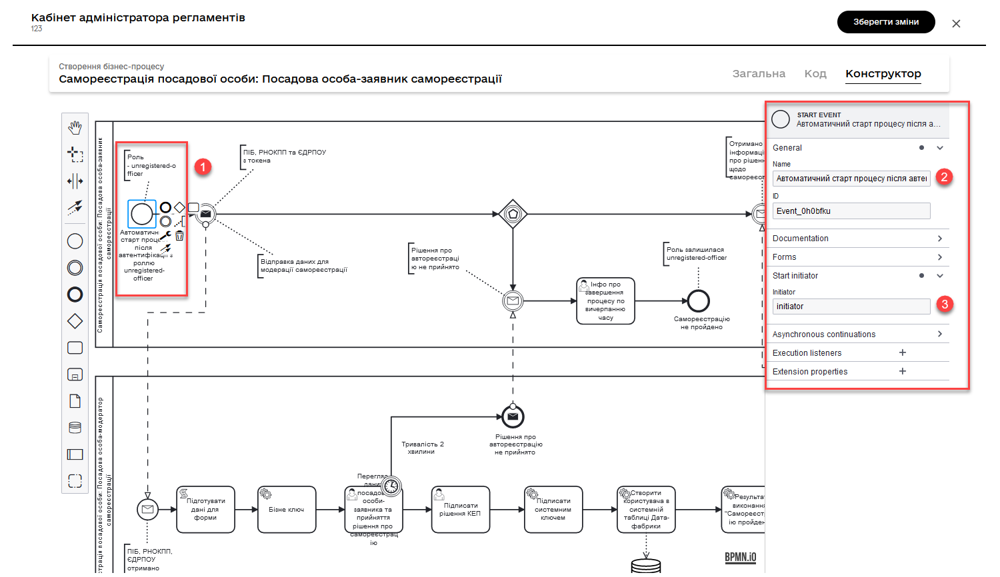
3.3. Sending token data for registration confirmation
Model an intermediate message throwing event — Message Intermediate Throw Event.
| For more details about the Message Intermediate Throw Event, you can refer to the page on Modeling and configuring this type of event in the documentation. |
This message event is an element in the business process that sends data (full name, drfo, and EDRPOU from the token) about the user to another process participant or process. In this case, it describes the sending of data from the initiator-applicant (the person trying to register) to the moderator for manual data confirmation.
- Configure the event as follows:
-
-
In the Implementation section:
-
Type:
Delegate expression. -
Expression: ${startProcessByMessageDelegate}. The variable is an implementation of the delegate.
-
-
In the Global message reference section:
-
Choose
startModerationBpMessagefrom the available list. -
Duplicate the value
startModerationBpMessagein the Name field for convenience.
-
-
In the Inputs section, specify the input data to pass to another process:
-
Create a local variable
messagePayload. -
Define its type as
Map(key-value pairs). -
Pass a set of key-value pairs as
Map entriesin the Key and Value fields using theinitiator()function:-
drfo/Registration number of the taxpayer’s account card (UA-specific)
-
Key: drfo -
Value: ${initiator().drfo}
-
-
drfo/Registration number of the taxpayer’s account card (UA-specific)
-
Key: edrpou -
Value: ${initiator().edrpou}
-
-
User’s full name
-
Key: fullName -
Value: ${initiator().fullName}
-
-
User’s username in the system
-
Key: userName -
Value: ${initiator().userName}
-
-
-
-
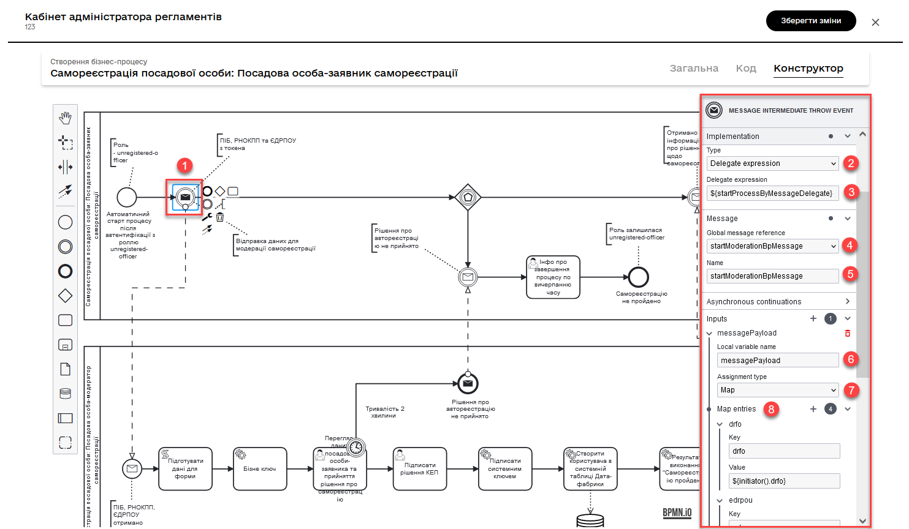
3.4. Moderator receiving token data for registration confirmation
Model a message start event—Message Start Event.
| For more detailed information about the Message Start Event, you can refer to the page on Modeling and configuring message start event. |
This event is an element in the business process that receives data (full name, drfo, and EDRPOU from the token) about the user from another process participant or process. In this case, it describes the receipt of data from the initiator-applicant (the person trying to register) by the moderator for manual data confirmation.
Configure the event as follows:
-
Define the event identifier as
start_message_event. It will be used in the subsequent script task. -
In the Global message reference section:
-
Choose
startModerationBpMessagefrom the available list. -
Duplicate the value
startModerationBpMessagein the Name field for convenience.
-
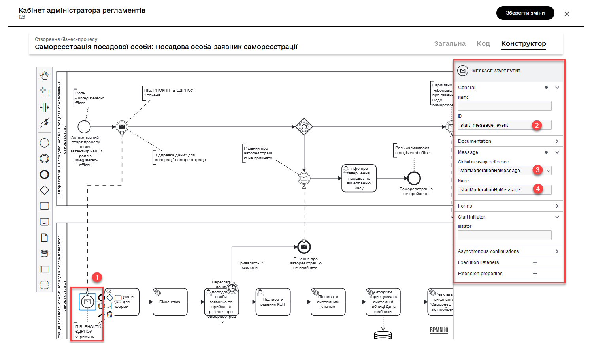
3.5. Script for data preparation for display on the UI form
Create a Script Task and add a Groovy script that prepares data for displaying on the UI form of the process.
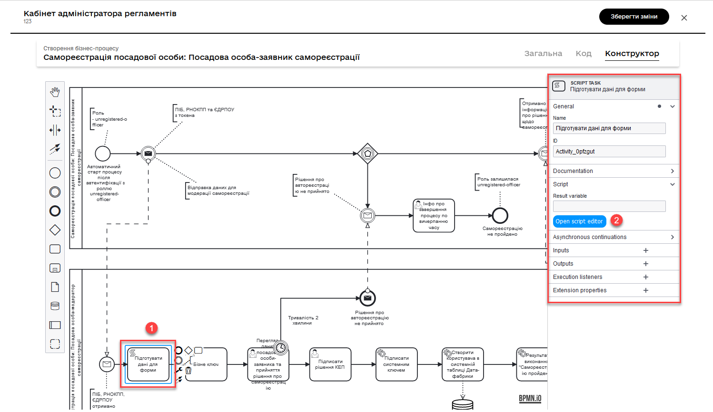
Open the script editor and add the following script:
Script for data preparation for display on UI form
set_transient_variable('payload', S(message_payload('start_message_event').data, 'application/json'))This script performs the following actions:
-
Extracts data from the
start_message_eventmessage and converts it into JSON format. This is done using the functionmessage_payload('start_message_event').data. Function S handles the JSON processing. -
After the data is transformed into JSON, the script creates a temporary variable named
payloadand assigns it the value of this data. The functionset_transient_variable()is used to create a process temporary variable that will store thepayloadvariable.
3.6. Determining the business key of the process
This task is a service task that utilizes the Define process business key delegate, which executes specific code or logic during the execution of this task.
What is a business key?The Business key, or Process business key (Business Key), is a domain-specific identifier for an instance of a business process in Camunda BPM. It is an additional attribute used during the modeling of business processes to ensure their unique identification, as well as the identification of user tasks within the process. |
The input parameter businessKey is set in the BP extension. This parameter receives values from a temporary variable called payload, which was created earlier, specifically from the attribute fullName.
After completing this task, the business key of the process will be set as the value of fullName from the temporary variable payload.
In this context, the service task receives the full name of the applicant from JSON data transmitted in the message and sets it as the business key for the current process instance:
${payload.value.prop('fullName').value()}
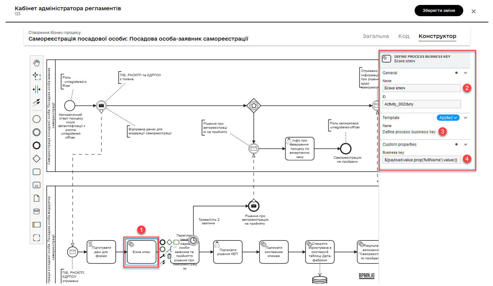
|
For more details about business keys, please see Configuring business keys in business processes. |
3.7. Reviewing data for moderator registration on the UI form
This task is a user task with the identifier makeDecisionActivity, intended for execution by an officer-moderator (candidateGroups="officer-moderator").
The task uses the formKey parameter with the value selfregistration-decision, indicating the UI form to be shown to the moderator for reviewing the data of the officer-applicant and making a decision on self-registration.
Using the User Form delegate, the Form data pre-population input parameter is defined, which receives data from the temporary variable "payload" specified in the earlier script. This parameter passes applicant data to the form displayed to the moderator.
After the moderator reviews the data and makes a decision, the process continues according to the moderator’s choice (confirmation or rejection of self-registration).
- Configure it as follows:
-
-
In the
Namefield, enter the name of the user task. -
Apply the delegate
User Formtemplate. -
In the
IDfield, specify the task identifier asmakeDecisionActivity. -
In the
Form keyfield, define the key for linking to the corresponding modeled business process form -selfregistration-decision. -
In the
Candidate rolesfield, input the role of the officer-moderator in the process, as defined in the regulations —officer-moderator. -
In the
Form data pre-populationfield, pass data to the UI form as the variable "${payload}."
-
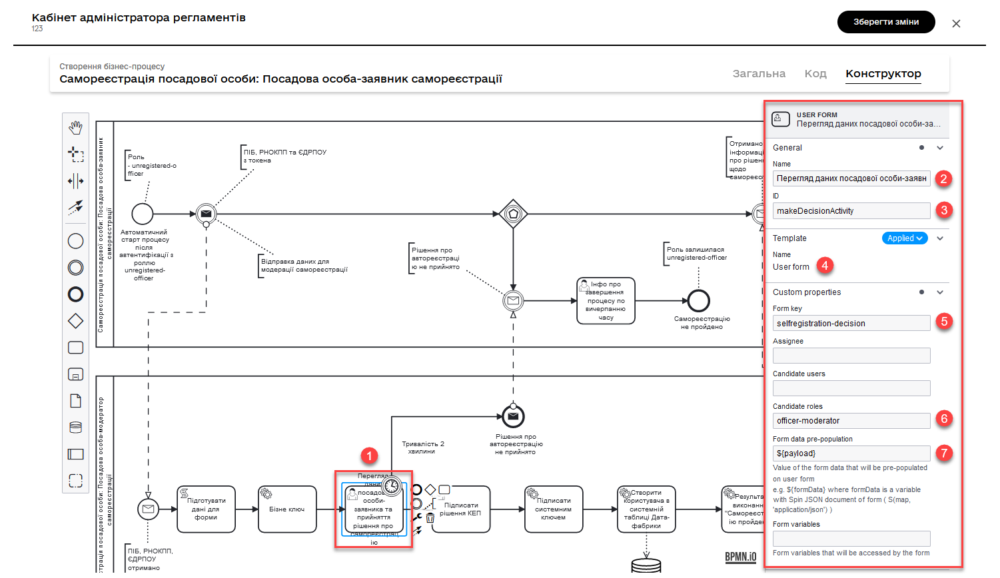
3.8. Timer for the moderator’s decision regarding registration
This is a Timer Boundary Event attached to the User Task makeDecisionActivity. This event contains a timer event definition that sets a timer with a duration of 2 minutes (PT2M).
When the User Task makeDecisionActivity is activated, the timer starts counting down from 2 minutes. If the moderator does not make a decision within this time, the timer triggers, and the process proceeds to the next step according to the alternative flow (meaning the user will not be registered).
Configure it as follows:
-
In the Name field, specify a name for the event.
-
In the Timer section:
-
In the
Type(Timer Definition Type) field, specify the timer type asDuration.For more details about timers, refer to the following pages: -
In the
Valuefield, specify the timer value in a specific format, e.g.,PT2Mfor 2 minutes.
-
You can configure the timer using the standard ISO 8601 format or a cron expression.
|
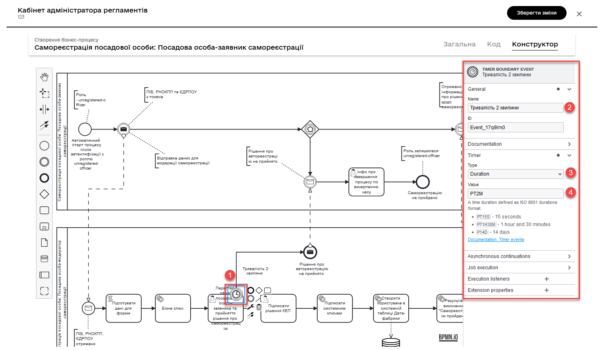
3.9. Sending a message that the self-registration decision was not accepted (alternative flow)
This is a Message End Event that has a message event definition and uses the ${sendMessageDelegate} delegate responsible for sending messages.
| For more details about the Message End Event, you can refer to the Modeling and configuration of Message End Event page. |
If the process reaches this event, it means that the self-registration decision was not accepted (for example, due to a timer triggering). In this case, the event sends a message with information that the decision was not accepted to another process or participant using the sendMessageDelegate delegate. Information about the identifier of the process that called this process (correlationProcessInstanceId) is passed as an input parameter.
The process_caller() function is used to obtain information about the process that triggered the current process.
In our case, the function retrieves the identifier (id) of the process that triggered the current process. This identifier is passed as an input parameter (correlationProcessInstanceId) to the sendMessageDelegate delegate, which sends the message.
- Configuration steps:
-
-
In the Implementation section, specify:
-
Type as
Delegate expression. -
Expression as
${sendMessageDelegate}. The variable is an implementation of the delegate.
-
-
In the Global message reference section:
-
Choose
decisionOverdueMessagefrom the available options. -
Duplicate the
decisionOverdueMessagevalue in the Name field for convenience.
-
-
In the Inputs section, specify the input data to be passed to another process:
-
Create a local variable called
correlationProcessInstanceId. -
Define its type as
String or Expression. -
In the Value field, pass the identifier of the process that triggered the current process using the
process_caller()function: ${process_caller().id}${process_caller().id}
-
-
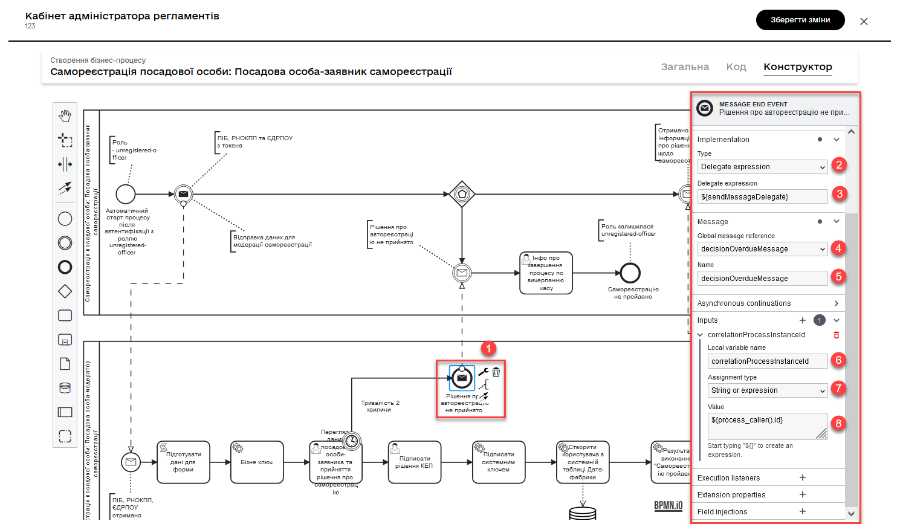
3.10. Receiving a message that the self-registration decision was not accepted (alternative flow)
This event is an Intermediate Message Catch Event in the BPMN process. It is used to wait for and catch an incoming message sent by another process or participant. Such events are typically used for synchronization or coordination between different processes or participants in a business process.
| For more details about the Intermediate Message Catch Event, you can refer to the Modeling and configuration of intermediate message catch event page. |
- Configuration steps for the event:
-
In the Global message reference section:
-
Choose
decisionOverdueMessagefrom the available options. -
Duplicate the
decisionOverdueMessagevalue in the Name field for convenience.
-
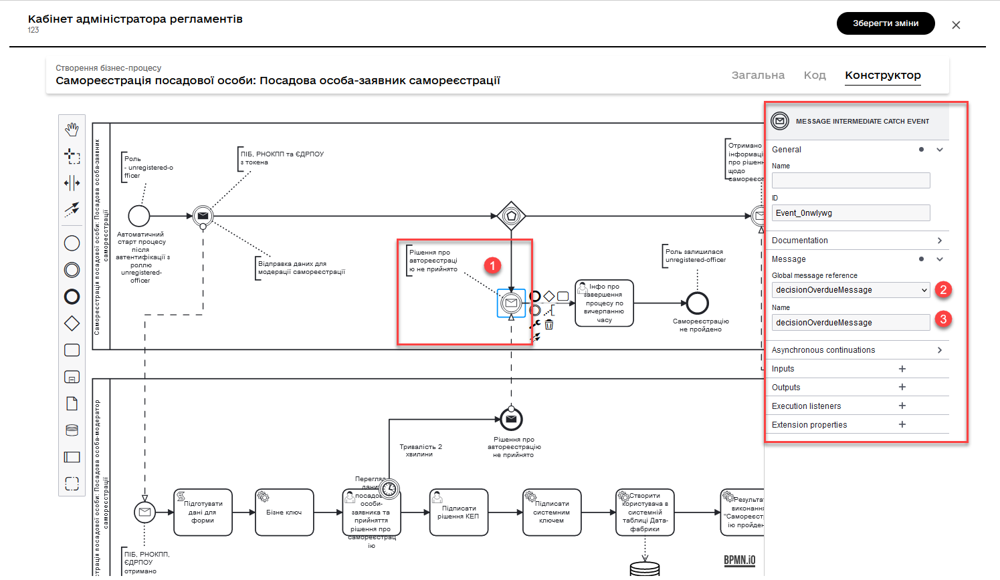
3.11. Displaying information about process completion on a form (alternative flow)
This task is a user task intended to provide information to the user that the registration process has ended due to a timeout for decision-making.
This task is assigned to the process initiator (camunda:assignee="${initiator}"), who is the applicant. The form associated with this task has the key selfregistration-decision-overdue (camunda:formKey="selfregistration-decision-overdue"), which displays information about the process completion due to a timeout.
- Configuration steps:
-
-
In the Name field, enter the name of the user task.
-
Apply the delegate template for this task — User Form.
-
Link the User Task to a UI form using the
Form keyparameter. Enter the value. -
In the
Assigneefield, specify the variable for the person to whom the current task is assigned -${initiator}.
-
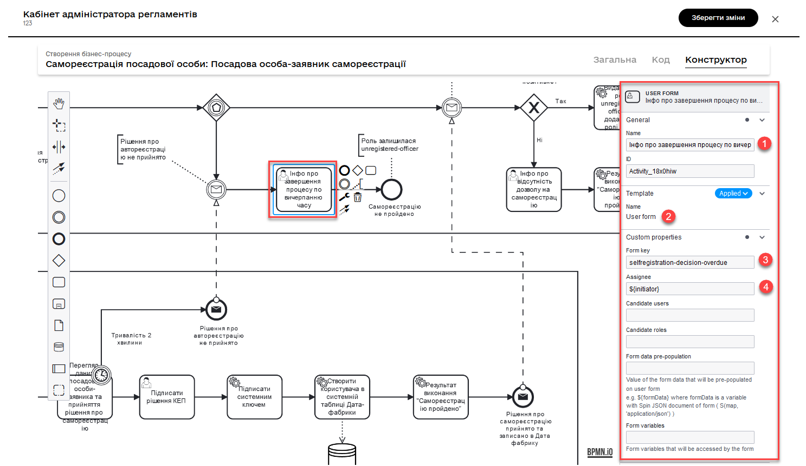
The process then concludes based on the end event in the alternative flow.
3.12. Signing data with a Qualified Electronic Signature (QES)
This task is a user task within the BPMN business process and is designed for signing the applicant’s decision using a Qualified Electronic Signature (QES).
This task is assigned to the user who performed the makeDecisionActivity task. The form associated with this task has the key selfregistration-sign-decision, which displays the QES decision signing form. The input data for the form is passed from the results of the makeDecisionActivity task.
After the user signs the decision, the process will continue along the main flow.
- Configuration steps:
-
-
In the
Namefield, enter the name of the user task. -
Apply the delegate template for this task —
Officer Sign Task. -
In the
IDfield, enter the task identifier assignDecisionActivity. -
In the
Form keyfield, specify the key to link to the corresponding modeled business process form -selfregistration-sign-decision. -
In the Assignee field, specify who the task is assigned to for execution. Use the
completer()function to assign it to the user who completed the makeDecisionActivity task: ${completer('makeDecisionActivity').userName}${completer('makeDecisionActivity').userName} -
In the
Form data pre-populationfield, pass the data to the UI form using thesubmission()function:${submission('makeDecisionActivity').formData}.
-
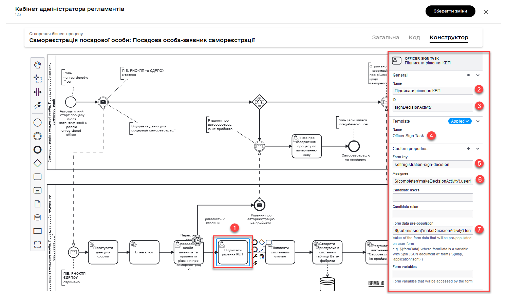
3.13. Signing data with a system key
This task is a Service Task within the BPMN business process and is designed for signing data with a system key, i.e., an automatic signature by the system.
This task uses the digitalSystemSignatureDelegate delegate, which is responsible for the logic of signing with the system key.
Input parameters for this task include x_access_token and payload. x_access_token is obtained from the user who completed the signDecisionActivity task, and payload contains the form data from the results of that task.
The task generates an output parameter subject_system_signature_ceph_key, which contains the generated system signature storage key.
- Configuration steps:
-
-
Model a service task for signing data with a system key.
-
Use the System signature by DSO service delegate from the template catalog for applying the system signature.
-
Pass input data to the submission function in the appropriate field: ${submission('signDecisionActivity').formData}
${submission('signDecisionActivity').formData} -
Pass the token of the last user task executor in the business process using:
${completer('signDecisionActivity').accessToken}. -
Store the response in the
subject_system_signature_ceph_keyvariable.
-
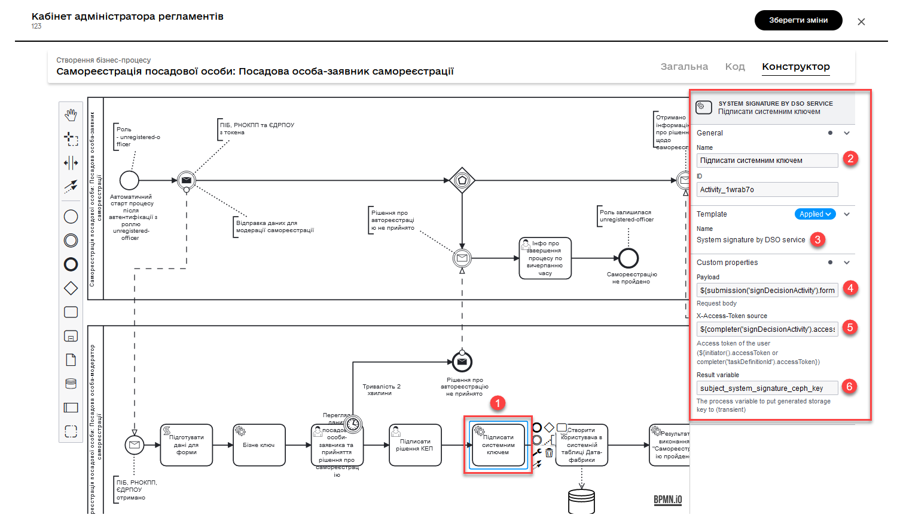
3.14. Creating a record in the registry database
This task creates a user record in the system’s database table. It uses the dataFactoryConnectorCreateDelegate delegate to perform the actions. The task receives input parameters from previous tasks, such as keys and form data, and passes them to create the user.
- Input parameters include:
-
-
x_digital_signature_derived_ceph_key: The key derived from the signed document. -
resource: The resource to be created (in this case,officers). -
x_access_token: The access token of thesignDecisionActivitytask executor. -
x_digital_signature_ceph_key: The system key of the document signed in thesignDecisionActivitytask. -
payload: The form data from thesignDecisionActivitytask.
-
- Configuration steps:
-
-
Create a service task.
-
Use the Create entity in data factory delegate to create an entity in the database.
-
Specify the resource/API endpoint as
officers, which corresponds to the name of the data model table you defined when creating the registry data model -officers. -
Pass input data through the
submission()function in the appropriate field:${submission('signDecisionActivity').formData} -
Pass the token of the last user task executor in the business process using:
${completer('signDecisionActivity').accessToken}. -
Specify the source of the system signature using the
sign_submission()function:${sign_submission('signDecisionActivity').signatureDocumentId}. -
Specify
${subject_system_signature_ceph_key} as the variable that holds the Ceph document key containing information about the signed data. -
Store the response in a result variable, for example,
response.
-
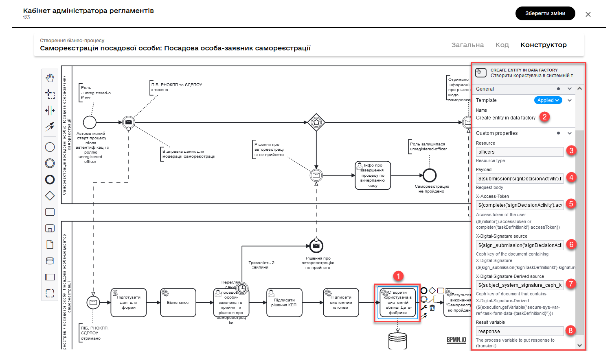
3.15. Determining the execution status of the process
This task sets the result of the "Self-registration completed" process execution using the defineBusinessProcessStatusDelegate delegate template. The task accepts input data from the previous task and passes the result to the next stage of the process.
- Set the execution result as follows:
-
-
Select the delegate template Define business process status from the available list.
-
In the Status field, enter the status as
Self-registration completed.
-
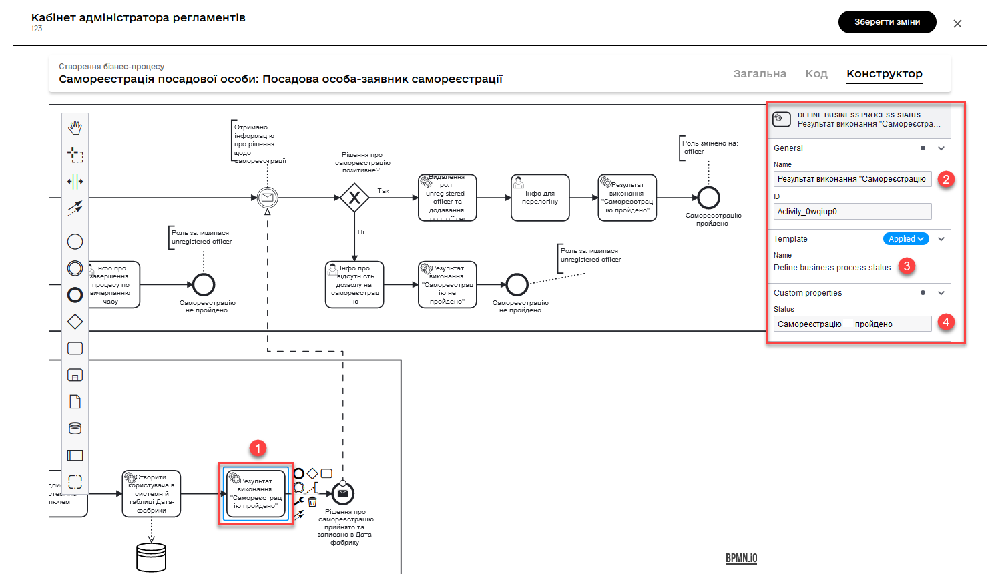
3.16. Sending the decision back to the applicant registration process
This task serves as the concluding event (Message End Event) in the moderator’s self-registration confirmation process. It performs the following functions:
-
Establishes a connection with the registrant process using the
correlationProcessInstanceIdparameter, which obtains its value from the ID of the calling process (${process_caller().id}). -
Transfers decision-related data regarding self-registration through the
messageDataparameter. This parameter contains information about a positive or negative decision (${submission('signDecisionActivity').formData.prop('selfregistrationDecision').value()}). -
Utilizes the delegate
${sendMessageDelegate}to send a message with the aforementioned data.
| For more details on the Message End Event, please refer to the Modeling and configuring the message end event page. |
- Configure the following settings:
-
-
In the Implementation section, specify:
-
Type:
Delegate expression. -
Expression:
${sendMessageDelegate}. This variable represents the delegate implementation.
-
-
In the Global message reference section:
-
Choose
decisionMessagefrom the available list. -
Duplicate the value
decisionMessagein the Name field for convenience.
-
-
In the Inputs section, specify the input data to be sent to another process:
-
Create a local variable
correlationProcessInstanceId.-
Define its type as
String or Expression, i.e., a string or expression. -
In the
Valuefield, pass the identifier of the process that invoked the current process. You can do this using theprocess_caller()function:${process_caller().id}
-
-
Create a local variable
messageData.-
Define its type as
Map, i.e., key-value pairs. -
Pass a set of key-value pairs as
Map entriesin theKeyand Value fields. You can do this using thesubmission()function:-
Key: isDecisionPositive(indicates the key for a positive result confirming the Officer’s registration) -
Value: ${submission('signDecisionActivity').formData.prop('selfregistrationDecision').value()}
-
-
-
-
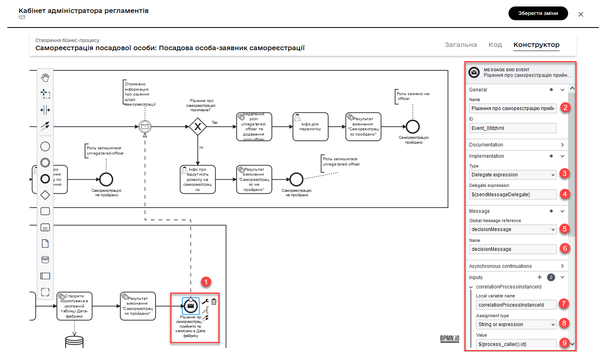
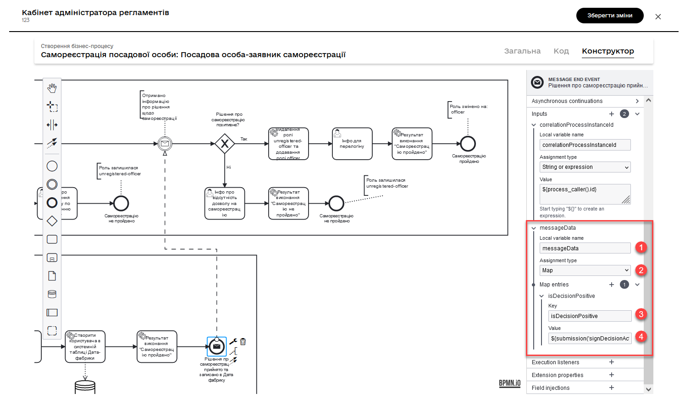
3.17. Receiving a message confirming self-registration decision and recording it in the Data Factory
This event serves as an Intermediate Message Catch Event in the BPMN process. It is used to wait for and intercept an incoming message sent by another process or participant. Typically, such events are used for synchronization or coordination between different processes or participants in a business process.
| For more details on the Intermediate Message Catch Event, you can refer to the Modeling and configuring the intermediate message catch event page. |
- Configuration steps:
-
In the Global message reference section:
-
Select
decisionMessagefrom the available list. -
Duplicate the value
decisionMessagein theNamefield for convenience.
-
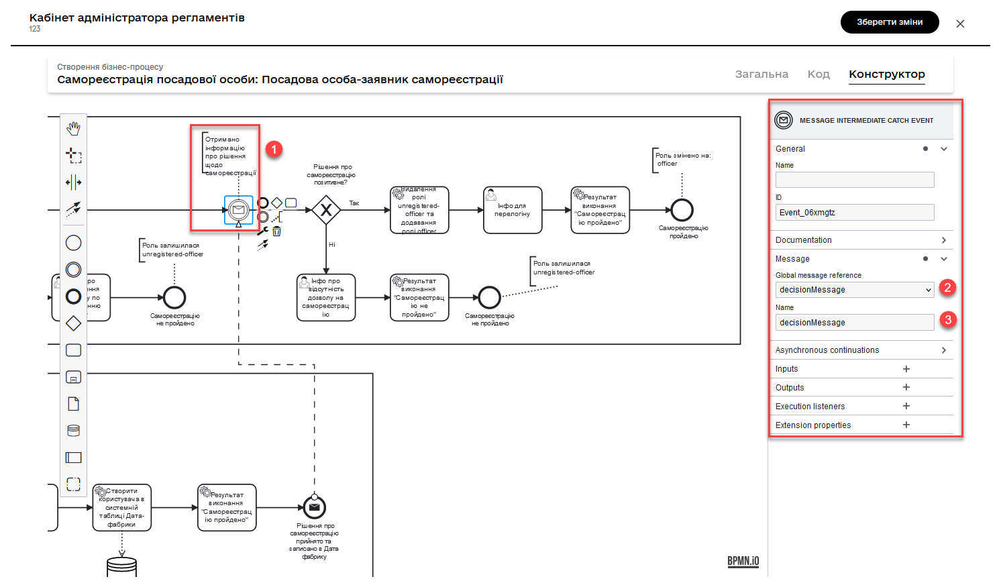
3.18. Modeling a XOR gateway and adding logic through condition expressions
Model an XOR gateway that, based on a certain condition, will determine the next flow of the business process.
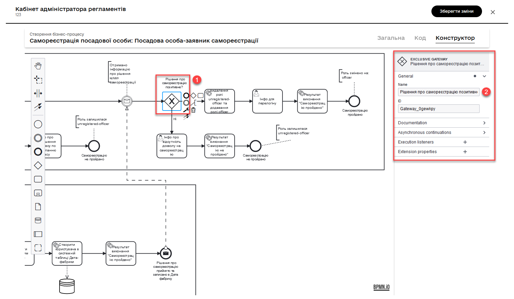
If the decision regarding registration is negative and is conveyed by a message from the moderator’s process as the key ${!isDecisionPositive}, then the process will follow an alternative flow, and the user will not complete the registration. The role of such a user will remain unregistered-officer.
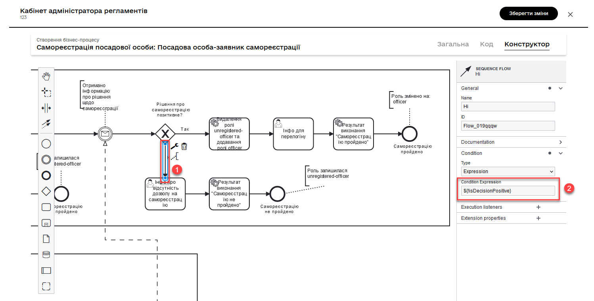
If the decision regarding registration is positive and is conveyed by a message from the moderator’s process as the key ${isDecisionPositive}, then the process will follow the main flow, and the user will complete the registration. The role of such a user will change in the subsequent service task from unregistered-officer to officer.
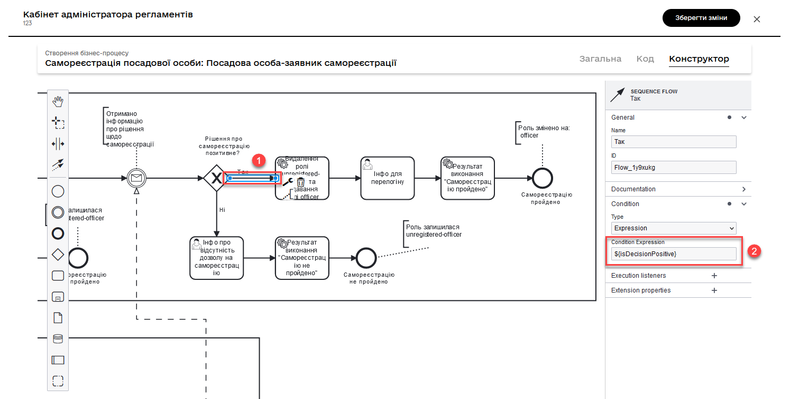
4. Displaying information on the lack of registration permission (alternative flow)
This task is a user task and is intended to provide information to the user about the lack of registration permission.
This task is assigned to the process initiator (camunda:assignee="${initiator}"), who is the applicant. The form associated with this task has the key selfregistration-denied-handmoderation (`camunda:formKey="selfregistration-denied-handmoderation`"), which displays information about the lack of registration permission.
- Configuration steps:
-
-
In the
Namefield, enter the name of the user task. -
Apply the delegate template for this task — User Form.
-
Associate the user task with the UI form using the
Form keyparameter. Enter the valueselfregistration-denied-handmoderation. -
In the Assignee field, specify the variable for the person assigned to the current task -
${initiator}.
-
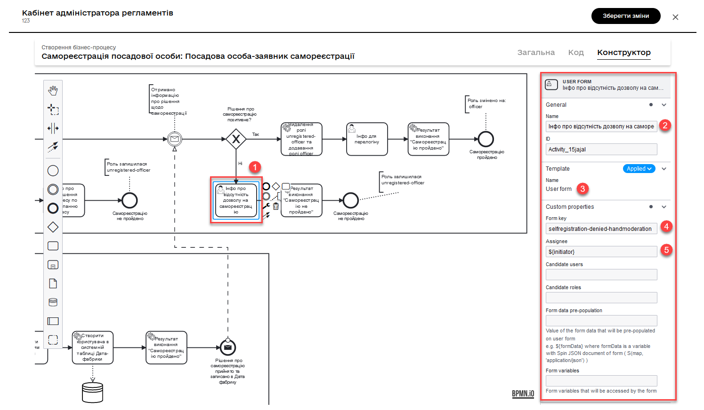
Next, set the outcome that the registration was not completed, and the process concludes, according to the end event in the alternative flow.
4.1. Removing the unregistered-officer role and assigning the Officer role to the Officer
After confirming the registration, data is passed to a service task that uses the Save user roles delegate to reassign roles to users and save them to the Keycloak database.
This task performs the following actions:
-
Removes the
unregistered-officerrole from the user who completes self-registration. -
Adds the officer role to the user after successful self-registration.
The task uses the ${keycloakSaveUserRoleConnectorDelegate} delegate, which interacts with Keycloak to change the user’s roles. Role information and other parameters are passed through input parameters:
-
realm is set to
OFFICER. -
roles contains a list of roles to be added to the user (in this case,
officer). -
usernamereceives the value of the username of the user completing self-registration (${initiator().userName}). -
roleTypeis set toALL ROLES, indicating that changes will be applied to all user roles.

| For more details about the delegate, you can refer to the Save user roles in Keycloak page. |
4.2. Displaying information on successful registration process completion
This user task displays an informational message to the user after a successful self-registration. The user should review the information and confirm its viewing. The task uses the User Form template and the form key selfregistration-success to display the corresponding user interface. The task is assigned to the initiator of the self-registration process (${initiator}).
- Configuration steps:
-
-
In the Name field, enter the name of the user task.
-
Apply the delegate template for this task — User Form.
-
Associate the user task with the UI form using the
Form keyparameter. Enter the valueselfregistration-success. -
In the Assignee field, specify the variable for the person assigned to the current task -
${initiator}.
-
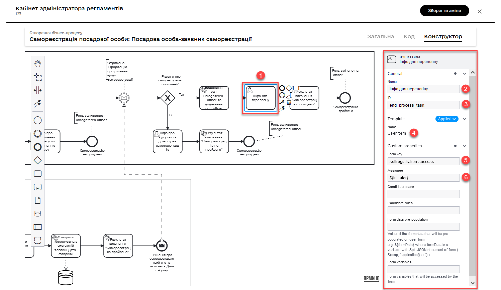
4.3. Setting the execution result and completing the process
In the following tasks, set the execution result of the process using a service task and the Define business process status delegate, and conclude the process with an End event.